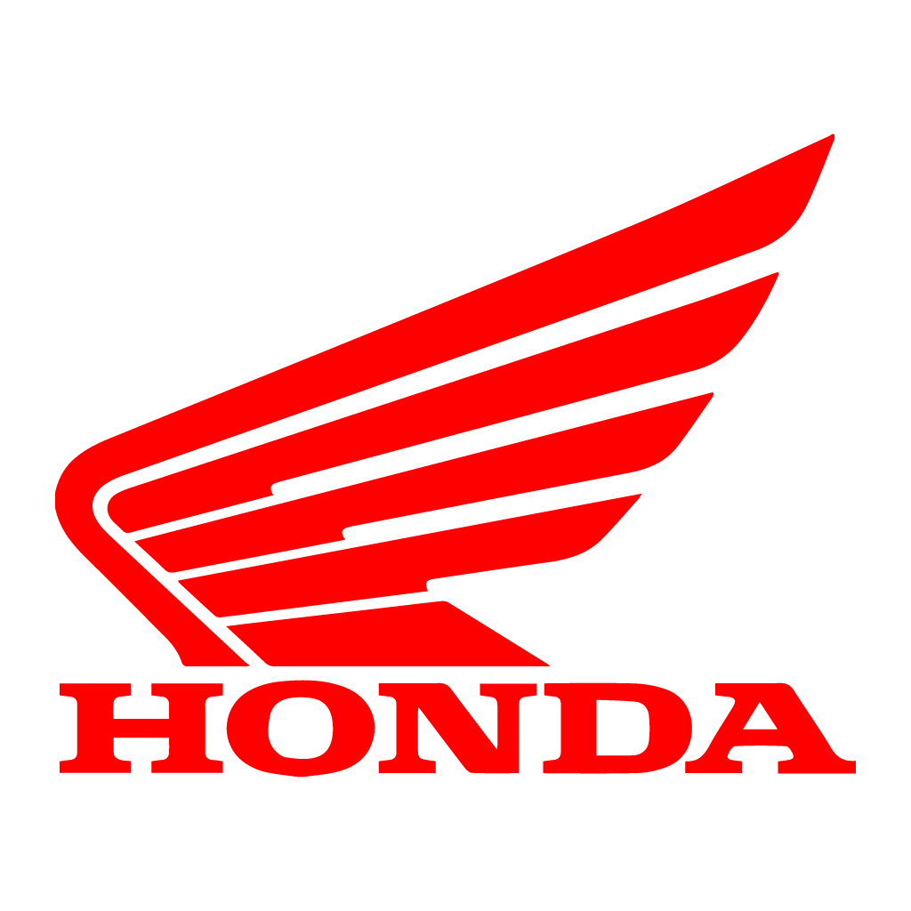
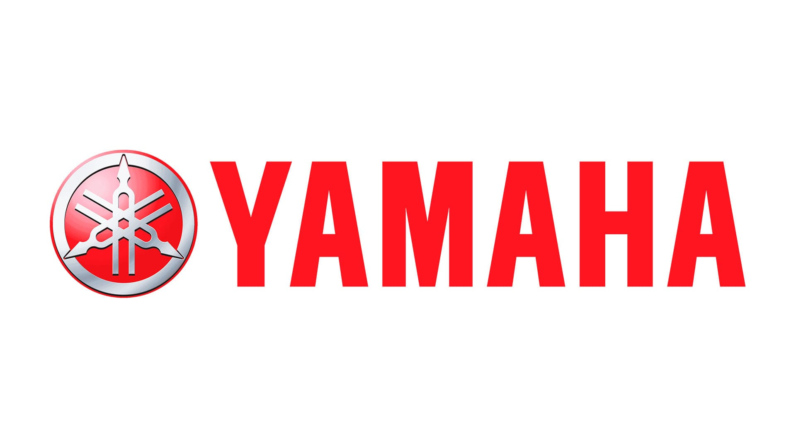

HISTÓRIAS
|  |
A história da Honda com motocicletas começa em 1949, quando a empresa japonesa lançou sua primeira motocicleta, a Dream D-Type.
A partir daí, a Honda começou a desenvolver sua tecnologia e aprimorar seus modelos, tornando-se rapidamente uma referência mundial no mercado de motocicletas.
A Honda também foi pioneira na introdução de novas tecnologias em motocicletas, como o motor de quatro tempos, em 1959, que trouxe maior eficiência e economia de
combustível em relação aos motores de dois tempos.
Outro exemplo é o sistema de injeção eletrônica de combustível, introduzido pela Honda em 1982, que se tornou um padrão na indústria de motocicletas.
Atualmente, a Honda é uma das principais fabricantes de motocicletas do mundo, com modelos que atendem a diversos segmentos de mercado, desde motocicletas de baixa
cilindrada até modelos de alto desempenho e tecnologia avançada.
A empresa continua investindo em novas tecnologias, como a eletrificação, e mantendo sua liderança no mercado de motocicletas em diversos países, incluindo o Brasil. |
A Yamaha é uma empresa japonesa fundada em 1887 por Torakusu Yamaha. Inicialmente, a empresa se dedicava à fabricação de instrumentos musicais,
como pianos e órgãos. Em 1955, a Yamaha começou a produzir motocicletas e rapidamente expandiu sua linha de produtos.
Ao longo dos anos,
a empresa lançou diversos modelos icônicos, como a Yamaha DT-1 e a Yamaha R1, além de se dedicar à produção de outros equipamentos, como motores de popa,
veículos todo-terreno, barcos, motos aquáticas e instrumentos musicais. Atualmente, a Yamaha é uma das principais fabricantes de motocicletas
do mundo, com modelos que atendem a diversos segmentos de mercado, e continua investindo em novas tecnologias, mantendo sua posição de destaque no mercado global.
|
 |
 |
Harley-Davidson é uma fabricante americana de motocicletas fundada em 1903 em Milwaukee, Wisconsin.
A empresa é conhecida por seus modelos de motocicletas de alta qualidade, estilo clássico e potência.
Ao longo dos anos, a Harley-Davidson se tornou uma marca icônica, com uma grande base de fãs em todo o mundo.
A empresa produz uma ampla gama de motocicletas, desde modelos de turismo até modelos de estrada, customizáveis de acordo com as preferências dos clientes.
Além de motocicletas, a Harley-Davidson também oferece acessórios e peças para personalização e manutenção de motocicletas,
além de roupas e equipamentos para motociclistas.
Nos últimos anos, a Harley-Davidson tem enfrentado desafios em relação às mudanças no mercado de motocicletas e a
concorrência de novas empresas no mercado. A empresa tem trabalhado para diversificar seus produtos e serviços e se adaptar às mudanças do mercado. |
Prezados Senhores
Gostaria de apresentar a nossa empresa de venda de motos, que tem como objetivo fornecer produtos e serviços de alta qualidade para os amantes de motocicletas.
A nossa empresa oferece uma ampla gama de modelos de motocicletas, desde modelos clássicos até modelos mais modernos, de várias marcas e tipos, que atendem às necessidades
e preferências dos nossos clientes. Além disso, também oferecemos uma variedade de acessórios e peças para personalização e manutenção das motocicletas, garantindo
que nossos clientes possam desfrutar de suas motocicletas ao máximo.
Com anos de experiência no mercado, nossa empresa se esforça para oferecer um atendimento personalizado e de alta qualidade para cada um de nossos clientes.
Nossa equipe de profissionais altamente treinados e especializados em vendas está sempre pronta para ajudar nossos clientes em cada etapa do processo de compra,
oferecendo uma experiência de compra agradável e sem complicações.
Acreditamos que a paixão por motocicletas é algo único e emocionante e nos esforçamos para compartilhar essa paixão com nossos clientes, fornecendo um
serviço excepcional e produtos de qualidade.
Estamos ansiosos para receber você em nossa loja e ajudá-lo a encontrar a motocicleta dos seus sonhos.